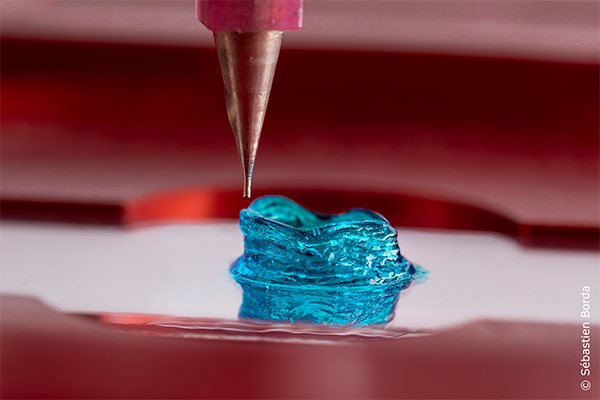
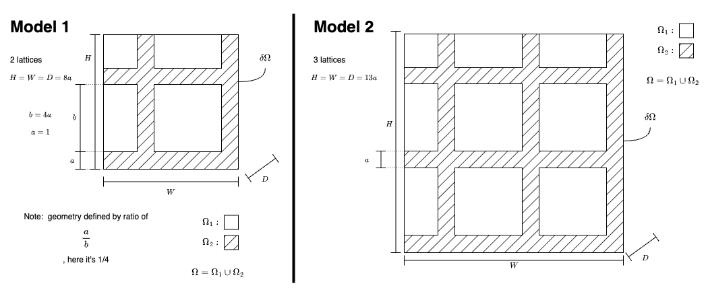

Modeling chemical concentration via diffusion equation to inform bioprinting template design

Bioprinting in an emmergent field with the goal of 2D/3D printing living tissue for organ construction. The applications are many; mostly within medicine, eg. for organ replacement, wound healing etc. Current approaches still suffer from several consistent problems; among them, the problem of scalability, which this project attempts to tackle. The problem of scalability refers to a situation where a bioprinting technique manages to successfully reconstruct a cell scaffold of small size but fails when applied to a larger sized scaffold. The reason for this can be complex but in our case it results from high concentration of chemicals necessary for bioprinting purposes (in our case DMSO
We model the diffusion process with the time dependent diffusion equation (explained in further detail below). We then solve for the concentration spatially and over time using the finite element method (FEM). FEM can be applied to solve partial differential equations, and is especially applicable for non-typical domains (eg not square or spherical). We construct the geometric variations based on our current 3D bioprinting capabilities, define them mathematically and mesh them for FEM solving.
The time-dependent diffusion equation describes how a quantity diffuses through space over time. It is given by:
\[\frac{\partial u(\mathbf{x}, t)}{\partial t} = D \nabla^2 u(\mathbf{x}, t)\]where:
This equation states that the rate of change of the concentration \(u\) with respect to time is proportional to the curvature of the concentration profile.
The Laplacian operator \(\nabla^2\) in Cartesian coordinates is:
\[\nabla^2 u = \frac{\partial^2 u}{\partial x^2} + \frac{\partial^2 u}{\partial y^2} + \frac{\partial^2 u}{\partial z^2}\]In cylindrical coordinates (assuming axial symmetry), it becomes:
\[\nabla^2 u = \frac{1}{r}\frac{\partial}{\partial r}\left(r \frac{\partial u}{\partial r}\right) + \frac{1}{r^2} \frac{\partial^2 u}{\partial \theta^2} + \frac{\partial^2 u}{\partial z^2}\]And in spherical coordinates (assuming radial symmetry), it becomes:
\[\nabla^2 u = \frac{1}{r^2}\frac{\partial}{\partial r}\left(r^2 \frac{\partial u}{\partial r}\right) + \frac{1}{r^2 \sin \theta} \frac{\partial}{\partial \theta}\left(\sin \theta \frac{\partial u}{\partial \theta}\right) + \frac{1}{r^2 \sin^2 \theta} \frac{\partial^2 u}{\partial \phi^2}\]The time-dependent diffusion equation is commonly used in various fields such as physics, chemistry, biology, and engineering to model the spreading of substances, heat, or other quantities through a medium over time.
The Finite Element Method (FEM) is a numerical technique used for solving partial differential equations (PDEs) by dividing the domain into smaller, simpler subdomains called finite elements. In FEM, the solution of the PDE is approximated by piecewise polynomial functions defined over these finite elements. The method involves discretizing the domain, forming a system of algebraic equations, and then solving them to obtain the approximate solution.
One popular tool for implementing FEM is the FEniCS Project. FEniCS is an open-source software package that provides a flexible platform for solving complex PDEs using automated finite element methods. It offers a high-level Python interface for defining and solving variational problems, allowing users to express their problems in a concise and natural mathematical language. FEniCS automates many of the tasks involved in FEM implementation, such as mesh generation, assembling stiffness matrices and load vectors, and solving linear and nonlinear systems of equations. Additionally, FEniCS comes with built-in support for parallel computing, making it suitable for solving large-scale problems efficiently.
We want to compare different scaffold designs and in particular:
Cubed design : This involves a solid cube.
Lattice design : This design involves a lattice structure with space between the lattice, both side to side and top to bottom. See below Models 1 and 2:
